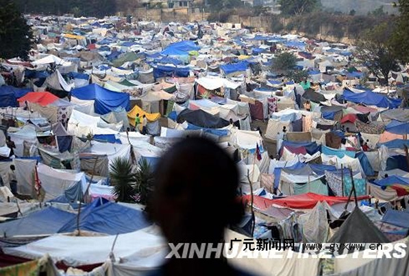

知己知彼，方能战胜“麻疹”2014-10-06 北京大德社区疾病控制中心

世界卫生组织12月9日发布《2014年世界疟疾报告》说，自2000年起全球疟疾病例数量稳步减少，疟疾死亡人数大幅下降。
报告估计，2013年全球约有1．98亿疟疾患者，死亡58．4万人，阿塞拜疆和斯里兰卡首次报告疟疾零感染病例，阿根廷、埃及、伊拉克等11国继续维持零感染病例，全球迈向清除疟疾目标的国家正在增加。
报告说，2000年至2013年间，获得疟疾快速检测、有效治疗及使用经杀虫剂处理的蚊帐预防疟疾的人数大幅增加。其中，2013年撒哈拉以南非洲地区半数面临疟疾风险的人群已使用经杀虫剂处理的蚊帐。
数据显示，2000年至2013年间全球疟疾死亡率下降了47％，其中疟疾死亡人数占全球疟疾死亡总人数九成的非洲地区死亡率下降54％。
不过报告也说，目前全球仍有数以百万计的人口缺少疟疾检测与治疗措施，针对孕妇、5岁以下婴儿以及儿童的防治进展缓慢。此外，东南亚部分国家出现了对青蒿素具有抗药性疟疾以及疟疾传播数据缺乏，这有碍全球减轻疟疾负担的努力。
疟疾是一种由疟原虫引起的急性传染病，多由蚊子叮咬传播，其独特症状为间歇性发冷发热。如不及时治疗，疟疾可通过破坏对重要器官的供血而致人死亡。
备注：本备注为接种部门添加